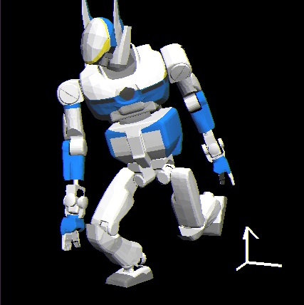

Next: ベースリンク仮想ジョイントヤコビアン Up: ロボットの動作生成 Previous: リンク間重複があるヤコビアン計算と関節角度計算 Contents Index
ここでは
腕・脚といったマニピュレータに
ベースリンクに3自由度の直動関節と
3自由度の回転関節が仮想的に付随したマニピュレータ構成を考える
(Fig.![[*]](crossref.png) ).
上記の仮想的な6自由度関節を
本研究ではベースリンク仮想ジョイントと名づける.
ベースリンク仮想ジョイントを用いることにより
ヒューマノイドの腰が動き全身関節が駆動され,
運動学,ひいては動力学的な解空間が拡充されることが期待できる.
).
上記の仮想的な6自由度関節を
本研究ではベースリンク仮想ジョイントと名づける.
ベースリンク仮想ジョイントを用いることにより
ヒューマノイドの腰が動き全身関節が駆動され,
運動学,ひいては動力学的な解空間が拡充されることが期待できる.
|


|